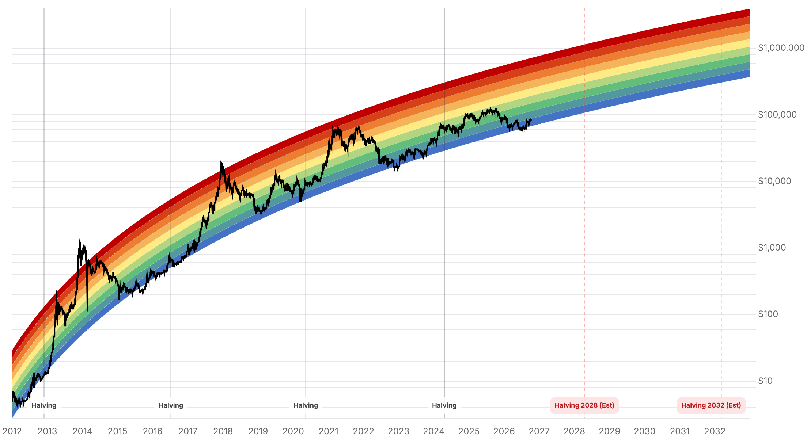

Reporte financiero
BTC cotiza en USD 82.451,72 en vivo (07:29 UTC), un +0,93% frente al cierre de ayer (USD 81.690,49), recuperándose parcialmente tras tocar un mínimo intradía cercano a USD 80.400-80.986 entre el 8 y el 9 de octubre -el nivel más bajo en casi tres semanas-. La novedad principal del día es que ya hay datos verificables de flujos de ETF que confirman la salida de capital institucional que faltaba en la edición de ayer: los ETFs spot de BTC en EE.UU. registraron una salida neta de USD 484,9M el 7 de octubre (la mayor desde el 25 de junio, con los 12 fondos en negativo esa sesión -IBIT -207,7M, FBTC -105,1M, ARKB -101,7M, GBTC -39,3M, BITB -27,8M, HODL -3,3M, según Farside Investors), seguida de una salida adicional de ~USD 244,1M el 8 de octubre (snapshot preliminar de Farside, aún sin confirmar por otros medios). La caída de precio coincidió con dos oleadas de liquidaciones apalancadas: ~USD 1.160M en 24 horas hacia el 7-8 de octubre (CoinGlass, ~90% posiciones largas, 191.736 traders), seguidas de ~USD 166M adicionales ya entrada la madrugada del 9 de octubre (USD 156,69M largos / USD 10,11M cortos, 8.409 traders). El trasfondo macro que presiona el precio: un selloff global de bonos llevó el rendimiento del Treasury a 30 años a 5,715% (Crypto Times) y el de 10 años a un máximo de 19 años (Cointelegraph), junto con un dólar más fuerte -ambos factores que típicamente presionan activos de riesgo-, reforzado por las minutas hawkish de la Fed ya conocidas el 7 de octubre. En paralelo, Strategy (ex-MicroStrategy) confirmó vía 8-K (5 de octubre) una compra adicional que llevó su stock a un récord de 848.000 BTC, con Michael Saylor publicando 'More orange than ever' -señal de que el mayor comprador corporativo no frena su acumulación pese a que la acción MSTR cae ~11% desde su máximo semanal. El Fear & Greed Index bajó por tercer día consecutivo, de 64 a 59 -sigue en 'Greed' pero cada vez más cerca de 'Neutral'-. Sin confirmación hoy de respuesta del Tesoro o el DOJ a las cartas del Senado sobre Tether (fechadas 28 de septiembre); tampoco hay actualización verificable de la probabilidad de una nueva subida de tasas en la reunión del 27-28 de octubre más allá del ~20% ya reportado ayer. El próximo catalizador mayor sigue siendo el IPC de septiembre, el 14 de octubre.
Farside Investors confirmó que los ETFs spot de BTC en EE.UU. tuvieron una salida neta de USD 484,9 millones el 7 de octubre, con los 12 fondos en territorio negativo esa sesión: IBIT (BlackRock) lideró con -USD 207,7M, seguido de FBTC (Fidelity) -USD 105,1M, ARKB (ARK 21Shares) -USD 101,7M, GBTC (Grayscale) -USD 39,3M, BITB (Bitwise) -USD 27,8M y HODL (VanEck) -USD 3,3M. Es la salida diaria más grande desde el 25 de junio (USD 691,7M). La tabla de Farside muestra además un dato preliminar de ~USD 244,1M de salida neta el 8 de octubre (IBIT -5,5M, FBTC -197,1M, ARKB -20,3M), pero no se encontró un artículo que confirme esta cifra como definitiva -se trata como dato no verificado todavía.
Según datos de CoinGlass citados por Cryptoticker, se liquidaron cerca de USD 1.160 millones en posiciones apalancadas en 24 horas en torno al 7-8 de octubre (~90% posiciones largas, 191.736 traders afectados), coincidiendo con la caída de BTC a un mínimo intradía de USD 80.427-80.986. Ya entrada la madrugada del 9 de octubre se registró una segunda ola menor de ~USD 166 millones (USD 156,69M en largos, USD 10,11M en cortos, 8.409 traders), con el precio tocando un mínimo de USD 80.400 antes de recuperarse hacia los USD 82.450 del precio en vivo de esta edición.
Un selloff global de bonos llevó el rendimiento del Treasury estadounidense a 30 años a 5,715% (Crypto Times), mientras que Cointelegraph reportó que el rendimiento a 10 años tocó un máximo de 19 años. Un dólar más fuerte acompaña el movimiento. Ambos factores -rendimientos más altos y dólar fuerte- típicamente presionan a los activos de riesgo como Bitcoin, y se suman al tono hawkish de las minutas de la Fed ya conocidas ayer (más alzas 'probablemente apropiadas' antes de fin de año).
Un Form 8-K fechado el 5 de octubre confirmó que Strategy elevó su posición a un récord de 848.000 BTC (desde 847.666 BTC), tras comprar 334 BTC entre el 1 y el 4 de octubre por USD 28,7M a un precio promedio de USD 85.838,80. El costo base total de la posición es de ~USD 63.970M (~USD 75.441 por BTC), lo que implica una ganancia no realizada de ~USD 5.500M al precio actual. La compra se financió con ventas del programa ATM (92.894 acciones MSTR por USD 15,7M netos) y caja. La acción MSTR cerró el 8 de octubre en USD 151,47, ~11% por debajo de su máximo semanal de USD 170,17 (2 de octubre), tras una sesión del 7 de octubre que cayó 6,79%. Michael Saylor, presidente ejecutivo de Strategy, publicó en X 'More orange than ever' antes de la última compra -señal de que la empresa no frena su estrategia de acumulación pese a la presión sobre su cotización.
El índice bajó de 64 (reportado ayer) a 59 hoy, tercera caída diaria consecutiva tras el 71 de hace dos días. Sigue en zona 'Greed' pero cada vez más cerca del límite con 'Neutral' (habitualmente bajo 55), consistente con el enfriamiento de sentimiento que acompaña la caída de precio y las salidas de ETF de esta semana.
No se encontró confirmación de que el Tesoro o el Departamento de Justicia hayan respondido a las cartas del senador Blumenthal (fechadas el 28 de septiembre) sobre el reporte de la subcomisión del Senado que vincula a Tether con banca en la sombra iraní -se evita inventar una respuesta o un plazo exacto no verificado. Tampoco se encontró una actualización confiable de la probabilidad de mercado para una subida de tasas en la reunión del 27-28 de octubre más allá del ~20% ya reportado ayer; las fuentes de mercados de predicción consultadas hoy dieron cifras contradictorias y poco fiables, por lo que se omite cualquier nueva cifra en vez de reportar un dato dudoso.
| Periodo | Valor |
|---|---|
| 3 oct | 84763.58 |
| 4 oct | 86480.3 |
| 5 oct | 85786.59 |
| 6 oct | 85557.56 |
| 7 oct | 83275.93 |
| 8 oct | 81676.34 |
| 9 oct (en vivo) | 82451.72 |
| Periodo | Valor |
|---|---|
| Fear & Greed | 59 |

“More orange than ever.”
Con el precio recuperando hacia USD 82.450 tras tocar un mínimo de casi tres semanas (~USD 80.400), la zona de soporte inmediata a vigilar es USD 80.300-81.700 (mínimo y cierre del 8 de octubre); una ruptura sostenida expondría la zona de congestión USD 79.600-80.000, mientras que recuperar y cerrar sobre USD 82.566-83.468 empezaría a estabilizar el cuadro técnico y reabriría el camino hacia USD 84.400-86.500. El catalizador más próximo sigue siendo el IPC de septiembre, el 14 de octubre.
Las salidas de ETF confirmadas (USD 484,9M el 7 de octubre, la mayor desde junio) y las liquidaciones apalancadas en cascada (~USD 1.160M y luego ~USD 166M) muestran presión real de flujo institucional de corto plazo, en un contexto de rendimientos de bonos en máximos de varios años. En contraste, la compra récord de Strategy (848.000 BTC) sugiere que al menos parte de la demanda corporativa de largo plazo sigue intacta pese a la caída de precio -dos señales en direcciones distintas que conviene seguir sin asumir que una domina a la otra todavía.
Sin cambios en los objetivos de precio de largo plazo ya reportados en ediciones anteriores (Citigroup USD 113.000, Bernstein, Standard Chartered, Tom Lee, NYDIG, Armstrong) ni en el trasfondo regulatorio de fondo (demanda de la ICBA contra la OCC, sanciones a la red A7, investigación sobre Tether) -no se encontró desarrollo nuevo y verificable en ese frente hoy más allá de lo ya reportado.
El precio recuperó desde un mínimo intradía cercano a USD 80.400, pero la zona USD 80.300-81.700 (mínimo y cierre del 8 de octubre) es el nivel inmediato a defender. Una ruptura sostenida expondría la congestión de USD 79.600-80.000; una recuperación sobre USD 82.566-83.468 sería la primera señal de estabilización.
Es la salida neta más grande desde junio y coincide con el mínimo de precio de la semana. Conviene confirmar si el dato preliminar de ~USD 244M del 8 de octubre se sostiene y si la tendencia de salidas continúa o se revierte en los próximos días, antes de leer el movimiento como un cambio de tendencia de flujos institucionales.
La compra récord de Strategy (848.000 BTC) refleja una tesis de acumulación de largo plazo de un solo actor corporativo, financiada en parte con ventas de su propia acción (que cae ~11% desde su máximo semanal) -no es necesariamente una señal de que el precio de BTC haya tocado un piso de corto plazo frente a la presión de flujos de ETF y liquidaciones de esta semana.